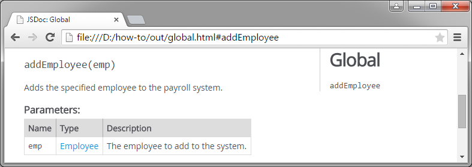
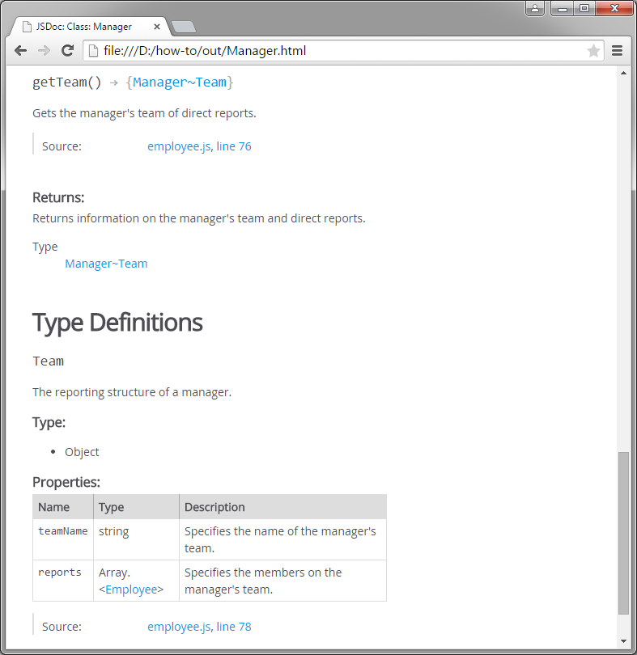

JavaScript includes a number of built-in data types, including six primitive types and the Object type. You can specify any of these types in block tags that take a type argument. The six primitive types are as follows.
JSDoc lets you specify the name of a class or other symbol as a type. If the symbol has a reference page in the documentation, a link is created to the reference page.
/**
* Adds the specified employee to the payroll system.
* @param {Employee} emp - The employee to add to the system.
*/
function addEmployee(emp) {}Notice that the Employee type in the Type column is a hyperlink. Clicking the link navigates to the reference for the Employee class.

You can write documentation for a custom type using the @typedef block tag. If, for example, you have a function that returns a complex object with a particular structure, you can define the properties of that object in a standalone comment block and then link to that definition from a Type field. The @typedef tag uses the following syntax.
@typedef [<data type>] <namepath>
The data type can be any of the valid types specified on the reference page for the @type tag. The namepath is the complete path to the symbol, including any module names, namespaces, and class names if the symbol is a member. Use a period (.) for static members, a tilde (~) for inner members, and a number sign (#) for instance members. If you want to define a global type, just write the type name.
/**
* The reporting structure of a manager.
* @typedef {Object} Manager~Team
* @property {string} teamName - Specifies the name of the manager's team.
* @property {Array.<Employee>} reports - Specifies the members on the manager's team.
*/
/**
* Gets the manager's team of direct reports.
* @returns {Manager~Team} Returns information on the manager's team and direct reports.
*/
Manager.prototype.getTeam = function() {};Notice the addition of the Type Definitions section. Any references to this custom type in a Type field will link to the definition in this section.
